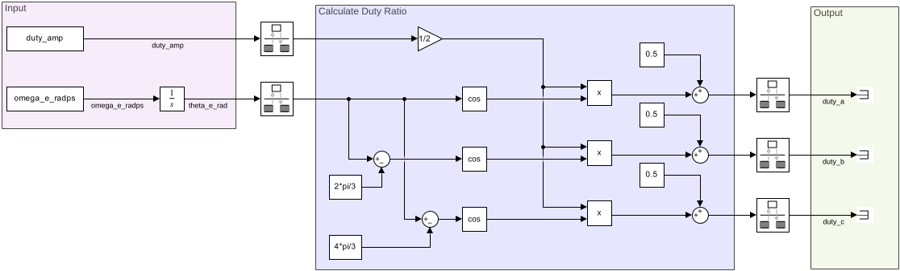
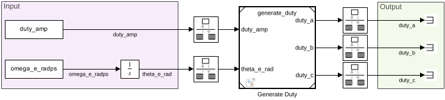

Tutorial: Autogen¶
Goal: Generate Autogen code based on Simulink model.
Complexity: 3 / 5
Estimated Time: 40 min
This tutorial goes over:
Organization of your repository to store code generated from Simulink
Creation of a Simulink simulation model to generate C code
Control implementation using the AMDC hardware
Tutorial Requirements¶
Working AMDC hardware
Completion of the “Voltage Source Inverter” tutorial
Read “Firmware Development Using Simulink Code Generation” article to understand an overview of Autogen
File Organization¶
The first step is to organize your repository. Create a new autogen folder and vsi folder in your repository, as shown below:
research-repo/
├── firmware/
│ ├── AMDC-Firmware/ <= [Existing] AMDC-Firmware as submodule
│ └── project-firmware/
│ └── usr/ <= [Existing] Your private user C code
│ └── controller/ <= [Existing] Your private user app
│ └── autogen/ <= [New] Create this folder
└── modeling/
└── simulink/
└── vsi/ <= [New] Create this folder
Install Required MATLAB/Simulink Toolbox¶
To develop C code using Simulink, the following software components are required:
Additional toolboxes may be required depending on the specific control design.
Create a Simulink Model¶
The next step is to create a Simulink model that can be used to generate C code. In this example, you will replace the C code in the VSI app developed in the “Voltage Source Inverter” tutorial with Autogen code to calculate the duty ratios.
In
simulink/vsifolder, create a new MATLAB file namedsetup.m.In
setup.m, copy-paste the following MATLAB code:
f_s_Hz = 10e3; % sampling frequency (Hz)
t_s_s = 1/f_s_Hz; % sampling time (s)
t_sim_s = t_s_s/10; % simulation time (s)
t_end_s = 10; % simulation end time (s)
omega_e_radps = 377.0; % electrical angular velocity (rad/s)
duty_amp = 0.8; % amplitude of the duty-ratio waveform (--)
Open a blank model of Simulink, and save it as
setup_model.slxin thesimulinkfolder.Add a
Constantblock and set its value toomega_e_radps.Add an
Integratorblock and connect it to theConstantblock. Rename the output signal of this integrator to betheta_e_rad.Add a
Constantblock and set its value toduty_amp.Add two
Rate Transitionblocks and connect them to theIntegratorandConstantblocks created above. In eachRate Transitionblock, set the sampling time tot_s_s.Create Simulink blocks to implement the following duty ratio calculation developed here:
// Calculate desired duty ratios
double duty_a = 0.5 + Do/2.0 * cos(theta);
double duty_b = 0.5 + Do/2.0 * cos(theta - 2.0*M_PI/3.0);
double duty_c = 0.5 + Do/2.0 * cos(theta - 4.0*M_PI/3.0);
Add a
Rate Transitionblock after the duty ratio calculations. In these blocks, set the sampling time to-1.The expected block diagram is shown below:


Model Setting¶
In
Modelingtab, pressModel SettingsinTOP MODELsection.Under the
Solvertree, in theSimulation time, set theStop timeast_end_s.In the
Solver Selection, pressFixed-step.Set
Fixed-step-sizeast_sim_s.
Go to
Code Generation.Click
Browsefor theSystem target file.Select
ert.tlc Embedded coder.In the
Build processsection, checkGenerate code only.
Go to
OptimizationunderCode Generation.Choose
Nonefor theLeverage target hardware instruction set extensionsin theTarget specific optimizations.
Go to
TemplatesunderCode Generation.Uncheck
Generate an example main programin theCustom templatessection.
Click
ApplyandOK.
Create a Referenced Model¶
Select the duty ratio calculation blocks, and right-click.
Select
Create Subsystem from Selection.Right-click on the subsystem created. Select
Block parameters (Subsystem), checkTreat as atomic unit, and clickOK.Right-click on the subsystem and select
Subsystem & Model Reference. SelectConvertand clickReferenced Model ....In the
Input Parameterssection, define theNew model nameasgenerate_duty.Click
ApplyandConvert.Rename the referenced model block to be
Generate Duty. The expected Simulink model is shown below:


Referenced Model Setting¶
Double-click the
Generate Dutyreferenced model and clickModel SettingsunderModelingtab.Click
Model Settingsin theREFERENCED MODELsection.Under the
Solvertree, in theSimulation time, set theStop timeast_end_s.Set
Fixed-step-sizeast_s_s.
Save the Simulink file.
The example of Simulink file along with the referenced model is stored here. Note that this Simulink model was created using MATLAB R2024b.
Generate C-code¶
Open the
setup.m.Copy and paste the following code.
% Autogen code for the controller
slbuild("controller");
build_dir = "generate_duty_ert_rtw";
dst_dir = "..\..\..\firmware\project-firmware\usr\controller\autogen";
delete(fullfile(dst_dir, '*.c'));
delete(fullfile(dst_dir, '*.h'));
% Copy only .c and .h files in autogen folder
% copyfile(fullfile(matlabroot, 'simulink', 'include', 'solver_zc.h'), dst_dir); %uncomment if your compiler alerts you that solver_zc.h is missing.
copyfile(fullfile(build_dir, '*.c'), dst_dir);
copyfile(fullfile(build_dir, '*.h'), dst_dir);
Run the
setup.mto generate C code. All autogenerated.cand.hfiles should be placed withinautogenfolder. Among these generated files, the most relevant are:
generate_duty.c— implementation of the control logicgenerate_duty.h— interface definitions (inputs, outputs, function declarations)
These files define the controller as a callable function with input and output structures, consistent with the execution model described earlier.
Open the SDK, and make sure that the
autogenfolder appears under theProject Explorer. If it does not, refresh the project.
Tip
If your C build fails with a missing solver_zc.h error (which can happen even in purely discrete models that use edge-triggered resets or triggered subsystems), this is because Embedded Coder does not copy this header into the model build folder automatically. Add the following line to your MATLAB copy script to pull it directly from your MATLAB installation:
copyfile(fullfile(matlabroot, 'simulink', 'include', 'solver_zc.h'), dst_dir);
## Integration with AMDC
Now, the user needs to update the user C code developed in the ["Voltage Source Inverter" tutorial](../vsi/index.md) to incorporate the generated code generated from Simulink. Specifically, this requires modifying `task_controller_clear`, `task_controller_init`, and `task_controller_callback` functions. Within the callback function, the control task executes the developed code at a fixed sampling interval, and the following items need to be included:
1. Populate inputs, such as constant values or sampled sensor data. The input variables are defined with `_U` suffix (e.g., `generate_duty_U`).
2. Call the controller step function
3. Route outputs to actuators, such as PWM duty cycles. The output variables are defined with `_Y` suffix (e.g., `generate_duty_Y`).
The functions that need to be updated for this example are shown below:
`task_controller.c`:
```c
// ...
int task_controller_clear(void)
{
// ...
// Clear state struct for Simulink controller
memset(((void *) &generate_duty_DW_DW), 0, sizeof(DW_generate_duty_T));
// ...
}
int task_controller_init(void)
{
// ...
// Initialize Autogen step
generate_duty_initialize();
// ...
}
double Ts = 1.0 / (double) TASK_CONTROLLER_UPDATES_PER_SEC;
double theta = 0.0; // [rad]
double omega = 377.0; // [rad/s]
double Do = 0.8; // [--]
void task_controller_callback(void *arg)
{
// ...
// Update theta
theta += (Ts * omega);
// Wrap to 2*pi
theta = fmod(theta, 2.0 * M_PI);
// Populate inputs
generate_duty_U.duty_amp = Do; // Inputs to controller as a constant value
generate_duty_U.theta_e_rad = theta; // Inputs to controller as feedback
// Call Autogen code
generate_duty_step();
// Calculate desired duty ratios
double duty_a = generate_duty_Y.duty_a; // Outputs from controller
double duty_b = generate_duty_Y.duty_b; // Outputs from controller
double duty_c = generate_duty_Y.duty_c; // Outputs from controller
// Update PWM peripheral in FPGA
pwm_set_duty(0, duty_a); // Set HB1 duty ratio (INV1, PWM1 and PWM2)
pwm_set_duty(1, duty_b); // Set HB2 duty ratio (INV1, PWM3 and PWM4)
pwm_set_duty(2, duty_c); // Set HB3 duty ratio (INV1, PWM5 and PWM6)
// ...
}
Note
In this example, the input theta is generated within the C code. However, this typically can be obtained from sensor measurements, such as encoder readings.
Running the AMDC¶
We are now ready to run the new control code! Try running the control task by typing ctrl init. You should obtain the same results as in the “Voltage Source Inverter” tutorial.
Conclusion¶
Congratulations!
You have now built an updated user app with code generated from Simulink for the voltage source inverter. These techniques can be extended for many other control problems, e.g., current regulation, motion control, or even more advanced controllers. By modifying the Simulink model and continuously generating C code, you can effectively develop new control algorithms.